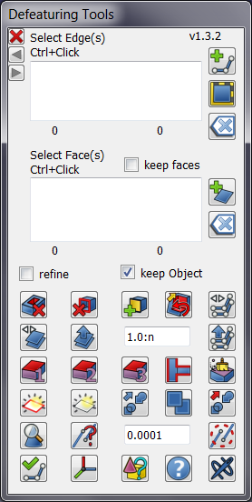
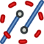

Defeaturing Workbench/en
{kind=link}
Introduction
Defeaturing Workbench is an add-on workbench intended for editing STEP models, removing of the selected features from the model. It is an external workbench and therefore not part of the standard FreeCAD install.
Features
- Features a set of tools to edit a Shape or a STEP model, removing hole(s), face(s), simplifying the model, changing the tolerance, applying Fuzzy Boolean operations etc.
- There are also tools to create more solid shape(s), from edge(s), face(s) or shell(s).
- It is also possible to use direct modeling of the model, when the history of operations is unavailable. (This is the case for 3D STEP models).
- Useful in situations to quickly remove proprietary details of the model before sharing it. See Defeaturing
Note: More advance Defeaturing tools can be used if OCC7.3 is available.
Installation
Automatic (recommended)
Using the FreeCAD  Addon Manager available in v0.17+ via Tools → Addon Manager. Search for the Defeaturing workbench icon. The Addon Manager also notifies the user when a new version of this Addon is available.
Addon Manager available in v0.17+ via Tools → Addon Manager. Search for the Defeaturing workbench icon. The Addon Manager also notifies the user when a new version of this Addon is available.
Manually
See How to install additional workbenches
Supports
- FreeCAD v0.15 4671
- FreeCAD v0.16 >= 6712
- FreeCAD v0.17 >= 13522
- FreeCAD v0.18
- FreeCAD v0.21
- FreeCAD v1.0
- FreeCAD v1.1+
References
- Author: Github: @easyw | FreeCAD Forums: [1]
- Source code on github: https://github.com/easyw/Defeaturing_WB
- FC forum thread https://forum.freecad.org/viewtopic.php?t=29506
Tools
{kind=link}

Defeaturing Tools are located in a separate mask.
{kind=link}
- Remove Holes: remove Hole from Face
- Remove listed Faces: remove 'in List' Faces
- Add Faces from 'in List' Edges: add Faces from 'in List' Edges
- Select Faces to be Parametric defeatured: select Faces to be Parametric defeatured
- Create a copy of the 'in List' Edges : create a copy of the 'in List' Edges
{kind=link}
{kind=link}
{kind=link}
{kind=link}
{kind=link}
- copy Faces from 'in List' Faces : copy Faces from 'in List' Faces
- offset face: offset face
- offset edge: offset edge
{kind=link}
{kind=link}
{kind=link}
- Make Solid from in List Faces: make Solid from in List Faces
- Make Solid from the Faces of the selected Objects: make Solid from the Faces of the selected Objects
- Make Solid from in List Faces: select ONE object to try to make a Solid through STEP import/export process
- Connect: connect
- clean Face(s) removing holes and merging Outwire: clean Face(s) removing holes and merging Outwire
{kind=link}
{kind=link}
{kind=link}
{kind=link}
{kind=link}
- show 'in List‘ Edge(s): show 'in List‘ Edge(s)
- show 'in List‘ Face(s): show 'in List‘ Face(s)
- refine: refine
- simple copy: simple copy
- parametric Refine: parametric Refine
{kind=link}
{kind=link}
{kind=link}
{kind=link}
{kind=link}
- geometry check: geometry check
- get Tolerance value: get Tolerance value

set Tolerance value: set Tolerance value
{kind=link}
{kind=link}
{kind=link}
- make Edge from selected Vertexes: make Edge from selected Vertexes
- reset Placement: reset Placement
- show/hide TypeId of the Shape: show/hide Type Id of the Shape
- help: help
{kind=link}
{kind=link}
{kind=link}
{kind=link}
- Fuzzy Cut: Fuzzy Cut
- Fuzzy Union: Fuzzy Union
- Fuzzy Common: Fuzzy Common
{kind=link}
{kind=link}
{kind=link}
Video Tutorials
Defeaturing
Removing Features using OCC7.3 new tools


Repairing
- Sew a Shape
- Removing or Simplify Faces
- Remove Holes or Pockets
- Read or Change Tolerance
- make Fuzzy Boolean operations
- Getting started
- Installation: Download, Windows, Linux, Mac, Additional components, Docker, AppImage, Ubuntu Snap
- Basics: About FreeCAD, Interface, Mouse navigation, Selection methods, Object name, Preferences, Workbenches, Document structure, Properties, Help FreeCAD, Donate
- Help: Tutorials, Video tutorials
- Workbenches: Std Base, Assembly, BIM, CAM, Draft, FEM, Inspection, Material, Mesh, OpenSCAD, Part, PartDesign, Points, Reverse Engineering, Robot, Sketcher, Spreadsheet, Surface, TechDraw, Test Framework
- Hubs: User hub, Power users hub, Developer hub